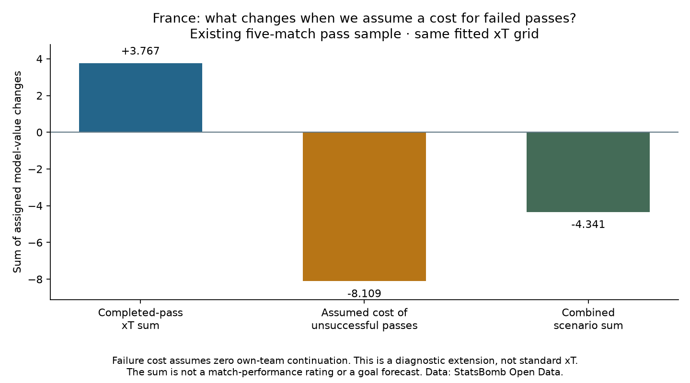

Football analyst training · Phase 3 · Lesson 45
Successful moves are only part of the picture.
Completed-pass xT measures end-zone value minus start-zone value. Looking only at successful passes leaves out unsuccessful attempts.
A simple worked scenario
Completed pass: 0.08 − 0.03 = +0.05 Unsuccessful pass, assuming zero continuation: 0 − 0.03 = −0.03
These are illustrative numbers. The failure score is our diagnostic assumption, not the standard successful-move xT metric. A loose ball or retained restart can still have value, so zero continuation may be wrong for an individual attempt.
Actual example
An incomplete Mbock Bathy Nka pass started in a 0.010684 zone and ended at a recorded location valued at 0.033988. We do not credit it as a completed move. Under the assumption, its score is −0.010684.
Completed assignment
We scored France's 1,723 selected completed passes and 367 unsuccessful attempts under the stated rules, retaining seven Unknown outcomes as excluded. The completed-only sum is +3.767; the combined scenario is −4.341. These totals use different coverage and are not a match rating or goal forecast.

Run 45_failed_pass_value.py in Spyder. score_pass() makes the assumptions explicit. The worked assignment is complete with assistance; ask for more detail on any new idea.